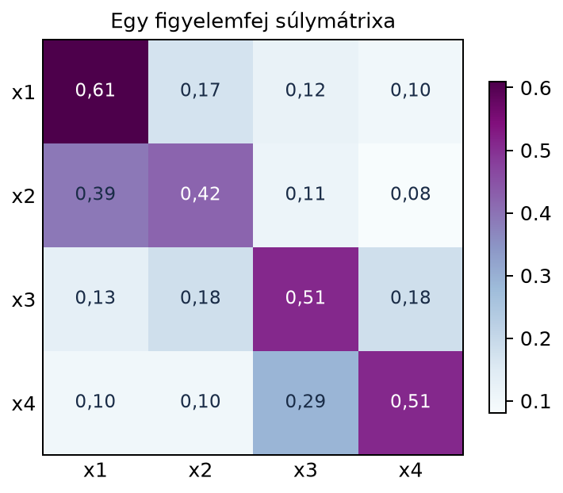

A lineáris algebra korábbi fejezeteiben skalárokkal, vektorokkal és mátrixokkal dolgoztunk. A gépi tanulás gyakorlatában azonban az adat szinte soha nem egyetlen vektor vagy mátrix. Egy minibatch 32 darab, egyenként 3 színcsatornás, 224×224 pixeles képből áll; ezt nem lehet egyetlen mátrixban kényelmesen tárolni. Egy transformernek szánt szöveges adag 64 tokenből áll, és minden tokenhez egy 512 dimenziós beágyazásvektor tartozik, ráadásul a figyelemnek több feje is van. A többdimenziós tömbök – a tenzorok – éppen ezt a szerkezetet írják le: az adatot tengelyek mentén rendezik, és a műveletek a tengelyekre hivatkozva fogalmazhatók meg.
Képzeljük el, hogy a polcon egymás mögött több táblázat áll. Minden táblázat egy mátrix, de a táblázatok együtt egy háromdimenziós tömböt alkotnak. Az első tengely a táblázat sorszáma, a második a sor, a harmadik az oszlop. Például egy minibatch 64 egymást követő időpontban rögzített mérésből áll, minden időponthoz 3 szenzor tartozik: a táblázat sorai az időpontok, oszlopai a szenzorok, a polcon egymás mögötti táblázatok pedig a batch egyes mintái. Az alak ilyenkor : batch, időpont, szenzor.
Definíció. A gépi tanulási gyakorlatban tenzornak nevezünk egy valós tömböt, amelynek minden elemét annyi index azonosít, ahány tengelye van. A tengelyek száma a tenzor rendje (order). A tenzor alakja (shape) az egyes tengelyek hosszainak listája: , ahol az -edik tengely hossza.
A tengelyeket érdemes névvel is ellátni. A leggyakoribb nevek:
Az alábbi alakok a leggyakoribbak:
Itt fontos eloszlatni egy kétértelműséget. A lineáris algebrában a mátrix rangja az oszloptér dimenziója, tehát egy skalár. A tenzorokkal foglalkozó szakirodalomban a rang szó néha a tenzor rendjét, vagyis a tengelyek számát jelenti, máskor pedig a tenzorfelbontás minimális tagszámát. Ebben a könyvben a mátrix rangját a korábbi fejezetek értelmében használjuk, a tenzor esetén pedig mindig tengelyek számáról vagy rendről beszélünk. A matematikai, multilineáris értelemben vett tenzor fogalma ennél tágabb: nem azonos az „-dimenziós tömbbel”, amely itt csupán a koordinátás ábrázolás. A 20.4. alfejezet (Külső szorzat, Kronecker-szorzat és rang-1 felbontások) külső szorzata és rang-1 felbontása éppen ehhez a szemlélethez kapcsolódik.
Legyen egy alakú tenzor, amelyet két rétegként képzelhetünk el. Az első réteg (a batch-tengely 0. indexe) és a második:
A teljes tenzort úgy is felírhatjuk, hogy az -edik batch, -edik sor és -adik oszlop eleme; például .
Számoljuk ki a tengely menti összeget az első tengely, azaz (batch) mentén. Ez azt jelenti, hogy a két réteget elemenként összeadjuk:
Az eredmény alakja , mert a batch tengelyt eltüntettük. Hasonlóan az átlag az első tengely mentén:
A maximum az utolsó tengely mentén () minden sorban a nagyobbik elemet választja:
Állítás. Ha az tenzor alakja , akkor a vagy művelet az -edik tengely mentén olyan tenzort ad, amelynek alakja , tehát az -edik hossz eltűnik.
Indoklás. A redukció során az
-edik
tengely minden indexéhez tartozó elemet egyetlen számmá kombinálunk
(összeg, átlag vagy maximum). A megmaradó tengelyek indexei
változatlanok maradnak, így azok hossza nem változik. A tengelyek száma
eggyel csökken: az
-edik
tengely kikerül a shape-ből. Ha a keepdims=True opciót
használjuk, akkor az eltüntetett tengely helyén egy 1 hosszú tengelyt
tartunk meg: a shape
lesz. Erre akkor van szükség, amikor az eredményt szeretnénk
broadcastinggal visszaszorozni vagy összehasonlítani az eredeti
tenzorral.
A következő kód a fenti kézi számolást reprodukálja, és bemutatja a batch-elt mátrixszorzást is.
import numpy as np
# Kézzel is felírt tenzor
X = np.array([[[1, 2],
[3, 4]],
[[5, 6],
[7, 8]]])
print("X.shape =", X.shape)
# Tengely menti összeg: axis=0 a batch tengely
S0 = X.sum(axis=0)
print("sum(axis=0):\n", S0)
# Tengely menti átlag: axis=0
M0 = X.mean(axis=0)
print("mean(axis=0):\n", M0)
# keepdims=True megtartja a tengelyt
M0k = X.mean(axis=0, keepdims=True)
print("mean(axis=0, keepdims=True).shape =", M0k.shape)
# Batch-elt mátrixszorzás: (2, 2, 3) @ (2, 3, 2) -> (2, 2, 2)
A = np.array([[[1, 0, 1],
[0, 1, 1]],
[[1, 1, 0],
[2, 1, 0]]])
B = np.array([[[2, 0],
[1, 1],
[0, 1]],
[[1, 2],
[0, 1],
[1, 0]]])
Y = A @ B
print("Y.shape =", Y.shape)
print("Y[0]:\n", Y[0])
print("Y[1]:\n", Y[1])Várt kimenet:
X.shape = (2, 2, 2)
sum(axis=0):
[[ 6 8]
[10 12]]
mean(axis=0):
[[3. 4.]
[5. 6.]]
mean(axis=0, keepdims=True).shape = (1, 2, 2)
Y.shape = (2, 2, 2)
Y[0]:
[[2 1]
[1 2]]
Y[1]:
[[1 3]
[2 5]]A batch-elt mátrixszorzásnál a @ operátor az utolsó két
tengelyt tekinti mátrixnak, és a korábbi (batch) tengelyek mentén
párhuzamosan végzi el a szorzást. Az első batch elemre a hagyományos
mátrixszorzást kapjuk:
.
A tenzorok és a tengely menti műveletek a neurális hálók minden szintjén megjelennek. Az alábbi bekezdések a transformer működését használják szemléltetésre, ez tehát előreutalás: a transformer felépítését és a többfejű figyelmet a 22. fejezet, a kereszt-entrópia-veszteséget a 24.1 alfejezet (Záróprojekt I: többrétegű háló tisztán NumPy-ban) tárgyalja részletesen. Vegyünk egy transformer-modellt, például egy modern LLM-et. A bemenet tokenekből áll: egy minibatchben szövegminta, mindegyik token hosszú, és minden token egy dimenziós beágyazásvektor. Ennek a bemenetnek az alakja . A beágyazási mátrix alakja , ahol a szókincs mérete; a token-azonosítókat tartalmazó mátrixot beágyazva egy tenzort kapunk, mert minden token azonosítóhoz a megfelelő sorát választjuk.
A többfejű figyelemben minden fejhez három vetített tenzor tartozik: , és , alakjuk , ahol a fejek száma, pedig az egy fejre jutó dimenzió. A figyelempontszámok kiszámítása batch-elt mátrixszorzás:
ahol a transzponálás az utolsó két tengelyt cseréli, így alakja . Az eredmény alakja , tehát minden batch elemre és minden fejre egy pontszámmátrixot kapunk. A softmax normalizálást a legutolsó tengely mentén végezzük, mert egy token figyelme az összes kulcs tokenre összegződik 1-re. Végül a kimenet lesz, amelynek alakja ismét , mert a pontszámmátrix szorozza a értéktenzort minden batch és fej esetén.
Az alábbi hőtérkép egyetlen figyelemfej súlymátrixát mutatja, amely egy nagyobb tenzor egy szelete. A valódi tenzor alakja : batch, fej, valamint a figyelemmátrix. A hőtérkép ebből egyetlen szeletet ábrázol, például a 0. batch-elemhez és a 0. fejhez.

A mátrix sorai a lekérdező, oszlopai a kulcs tokenek súlyai; a sorok összege 1, mert softmax-normalizált figyelemsúlyok. A konkrét értékek illusztratívak: itt a főátlóhoz közeli értékek nagyobbak, ami azt jelenti, hogy egy token erősebben figyel saját magára és a közeli tokenekre.
A tengely menti redukciók a veszteség számításánál is
kulcsfontosságúak: a keresztentrópia-veszteséget először az utolsó
tengely mentén (a szókincs logitokra) összegzik, majd a batch és a
tengely mentén átlagolják. A keepdims=True trükk gyakran a
normalizálásnál jelenik meg, amikor a batch-statisztikát (átlag, szórás)
szeretnénk visszaosztani az eredeti tenzorra.
Az axis paraméter rossz
értelmezése. Kezdők gyakran azt hiszik, hogy
axis=0 az első elemet jelenti, nem pedig az első tengelyt.
A X.sum(axis=0) nem az első elem összegét adja, hanem a 0.
tengely mentén összegez, vagyis eltünteti a batch dimenziót. Mindig
érdemes ellenőrizni az eredmény shape-jét: ha az eredeti alak
volt, akkor sum(axis=0) után
lesz, nem
.
A shape-hiba a batch-elt mátrixszorzásnál. A
@ operátor batch-elt tenzorokra az utolsó két tengelyt
szorozza össze, ezért a méreteknek illeszkedniük kell:
és
szorzatának alakja
.
A batch-tengelyekre a NumPy a broadcasting szabályait alkalmazza: egy 1
hosszú batch-tengely kiterjed (ez ritkán szándékos), két különböző,
1-től eltérő hossz pedig hibát ad. Gyakori hiba a
és
tenzorok közvetlen szorzása a figyelemben a transzponálás nélkül; ekkor
az alakok nem illeszkednek, mert a mátrixszorzás
-t
adna, ami nem értelmezhető
esetén.
A keepdims elhagyása. Amikor a
redukció eredményét szeretnénk visszaszorozni az eredeti tenzorral, a
keepdims=False (alapértelmezett) eltünteti a tengelyt, és a
broadcasting nem úgy működik, ahogy várnánk. Például a centrálásnál az
átlagot keepdims=True móddal érdemes kiszámolni, hogy az
alak
legyen, és így kivonható legyen a
tenzorból.
Fogalmi kérdés. Magyarázd el, mit jelentenek a alakú tenzor tengelyei a többfejű figyelemben. Hány tengelye van, és mi a tenzor rendje?
Kézi számolás. Adott a fenti tenzor, amelynek alakja és elemei: , . Számítsd ki a következőket, és add meg az eredmények alakját is:
NumPy-feladat. Hozz létre egy
np.arange(24).reshape(2, 3, 4) tenzort. Számítsd ki az
átlagot az axis=1 tengely mentén keepdims=True
móddal. Add meg az eredmény shape-jét és az eredmény tenzort.
Gondolkodtató alkalmazás. Legyen
és
alakja
.
A figyelempontszámok kiszámításához miért van szükség transzponálásra?
Mi lesz a Q @ K.transpose(0, 1, 3, 2) művelet eredményének
alakja, ha
,
,
és
?
Melyik tengely mentén kell softmaxot alkalmazni, és miért?
A tenzor négy tengelyű, tehát a rendje 4. Az első tengely a batch méret (), a második a figyelemfej (), a harmadik a lekérdező token pozíciója (), a negyedik a kulcs token pozíciója (). Az utolsó két tengely egy figyelemmátrixot alkot minden batch elemre és fejre.
Az tenzor két rétege: , .
minden rétegben a sorokat adja össze (oszloponként): A batch-tengely megmarad, a sortengely eltűnik, így az eredmény alakja : az első sora az -ból, a második az -ből származik.
az utolsó tengely mentén átlagol, vagyis minden rétegben minden sorhoz egy számot ad (a sor két elemének átlagát): Az eredmény alakja :
a batch mentén elemenként maximumot választ: Alakja .
A NumPy-kód (önállóan futtatható):
import numpy as np
X = np.arange(24).reshape(2, 3, 4)
M = X.mean(axis=1, keepdims=True)
print("M.shape =", M.shape) # (2, 1, 4)
print(M)A tenzor elemei
(0-tól indexelve). Az axis=1 menti átlag minden
batch-elemre
()
és oszlopra
()
a
értékek átlaga. Mivel a
tag átlaga
,
az eredmény
Ellenőrzés közvetlenül:
,
esetén
;
esetén
.
Így az első batch-elemre
,
a másodikra
()
adódik, az alak
.
Az átlag lebegőpontos, ezért a kiírásban tizedespont szerepel. Várt
kimenet:
M.shape = (2, 1, 4)
[[[ 4. 5. 6. 7.]]
[[16. 17. 18. 19.]]]A figyelempontszámokhoz minden batch-re és fejre egy
pontszámmátrixot kell kapnunk. A
és
tenzorok alakja
.
Ha közvetlenül
-t
számolunk, akkor az utolsó két tengely szerint mátrixszorzás történne:
és
szorzata nem értelmezhető, mert a belső dimenzió nem illeszkedik
(
általában). A transzponálás az utolsó két tengelyt cseréli:
alakja
.
Ekkor a szorzás
lesz, ami
-t
ad minden batch-re és fejre. A Q @ K.transpose(0, 1, 3, 2)
tehát
alakú eredményt ad. A megadott számokkal:
.
A softmaxot a legutolsó tengely mentén kell alkalmazni, mert minden
lekérdező tokenhez a
kulcs token pontszámai vannak az utolsó dimenzióban. A softmax után
kapott figyelmi súlyoknak kell 1-et adniuk, nem a nyers pontszámoknak: a
normalizálás a pontszámok exponenciálisainak összegével oszt.
A gépi tanulási gyakorlatban a tenzor
tengelyű valós tömb, amelynek minden elemét
index azonosítja. A tenzor alakja a tengelyek hosszainak listája,
például képköteg
,
tokenköteg
,
figyelemsúlyok
.
A tengely menti redukciók – sum, mean,
max – az adott tengelyt eltüntetik; a
keepdims=True opció megtartja 1 hosszú tengelyként. A
batch-elt mátrixszorzás @ vagy matmul az
utolsó két tengelyt szorozza, a korábbi tengelyek mentén párhuzamosan. A
tenzorok helyes shape-kezelése a neurális hálók, például a transformer
figyelemrétegének alapfeltétele.
A három legfontosabb definíció/képlet: